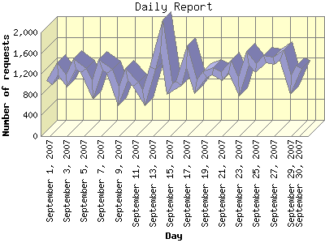

Report generated by Analog 6.0 and Report Magic 2.21
|
Web Server Statistics for "Harish Narayanan (hnarayan) - September 2007" Report generated by Analog 6.0 and Report Magic 2.21 |
The Daily Report identifies the activity for each day within the reporting period. Remember that one page hit can result in several server requests as the images for each page are loaded.

| Day | Number of requests | Number of bytes transferred | Percentage of the bytes | Percentage of the requests | |
|---|---|---|---|---|---|
| 1. | September 1, 2007 | 1,039 | 28.403 MB | 2.50% | 2.85% |
| 2. | September 2, 2007 | 1,299 | 32.224 MB | 2.83% | 3.56% |
| 3. | September 3, 2007 | 1,063 | 32.469 MB | 2.85% | 2.91% |
| 4. | September 4, 2007 | 1,397 | 38.200 MB | 3.36% | 3.83% |
| 5. | September 5, 2007 | 1,266 | 39.268 MB | 3.45% | 3.47% |
| 6. | September 6, 2007 | 887 | 21.149 MB | 1.86% | 2.43% |
| 7. | September 7, 2007 | 1,380 | 39.973 MB | 3.51% | 3.78% |
| 8. | September 8, 2007 | 1,254 | 21.730 MB | 1.91% | 3.44% |
| 9. | September 9, 2007 | 765 | 18.037 MB | 1.59% | 2.10% |
| 10. | September 10, 2007 | 1,185 | 18.600 MB | 1.64% | 3.25% |
| 11. | September 11, 2007 | 1,005 | 27.283 MB | 2.40% | 2.75% |
| 12. | September 12, 2007 | 731 | 29.679 MB | 2.61% | 2.00% |
| 13. | September 13, 2007 | 1,320 | 30.135 MB | 2.65% | 3.62% |
| 14. | September 14, 2007 | 1,930 | 52.482 MB | 4.61% | 5.29% |
| 15. | September 15, 2007 | 911 | 36.940 MB | 3.25% | 2.50% |
| 16. | September 16, 2007 | 1,023 | 32.661 MB | 2.87% | 2.81% |
| 17. | September 17, 2007 | 1,533 | 42.989 MB | 3.78% | 4.20% |
| 18. | September 18, 2007 | 960 | 34.044 MB | 2.99% | 2.63% |
| 19. | September 19, 2007 | 1,184 | 32.519 MB | 2.86% | 3.25% |
| 20. | September 20, 2007 | 1,247 | 89.825 MB | 7.90% | 3.42% |
| 21. | September 21, 2007 | 1,160 | 29.718 MB | 2.61% | 3.18% |
| 22. | September 22, 2007 | 1,344 | 86.689 MB | 7.62% | 3.69% |
| 23. | September 23, 2007 | 951 | 43.249 MB | 3.80% | 2.61% |
| 24. | September 24, 2007 | 1,504 | 49.588 MB | 4.36% | 4.12% |
| 25. | September 25, 2007 | 1,317 | 57.538 MB | 5.06% | 3.61% |
| 26. | September 26, 2007 | 1,490 | 24.888 MB | 2.19% | 4.08% |
| 27. | September 27, 2007 | 1,451 | 45.545 MB | 4.00% | 3.98% |
| 28. | September 28, 2007 | 1,563 | 33.326 MB | 2.93% | 4.29% |
| 29. | September 29, 2007 | 983 | 21.381 MB | 1.88% | 2.69% |
| 30. | September 30, 2007 | 1,332 | 47.067 MB | 4.14% | 3.65% |
Most active day September 26, 2007 : 218 pages sent. 1,930 requests handled. 55,031,079.00 served.
Daily average: 1,215 requests handled. 37.920 MB served.
This report was generated on October 30, 2007 16:30.
Report time frame September 1, 2007 00:16 to September 30, 2007 23:55.
| Web statistics report produced by: | |
 Analog 6.0 Analog 6.0 |  Report Magic 2.21 Report Magic 2.21 |